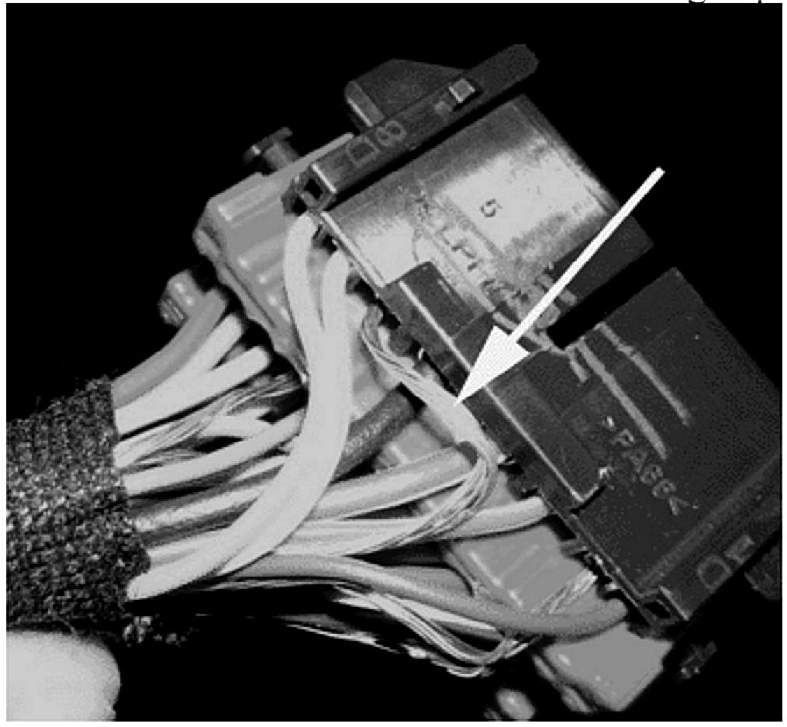
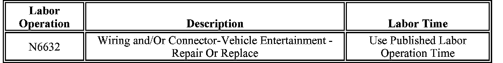

Audio System - Pop/Buzz/Whine/Distortion From Speakers
Subject:Buzz, Pop or Whine Noise from Any Speaker (Secure Wiring Harness)
# 06-08-44-031 - (10/04/2006)
Models:
2007 Cadillac Escalade, Escalade ESV, Escalade EXT
2007 Chevrolet Avalanche, Silverado, Suburban, Tahoe
2007 GMC Sierra, Yukon, Yukon XL, Yukon Denali
with Speakers, Premium Audio w/Amplifier (RPOs UQA or UQS)
Condition
Some customers may comment on a buzz, whine, distortion, pop, or static noise coming from any speaker.
Cause
The radio low level signal drain wires may be too long.
Correction
1. Remove the floor console bezel assembly (cup holder).
2. Remove the wire harness connector retaining clips to view wire harness and connector C211.

3. Inspect the bare silver colored drain wires at C211 to see if the wires are touching adjacent terminals. Refer to the above graphic.
4. If the wires are too long, pull back the excess wire and secure the slack to the harness using electric tape.
5. If securing the harness does not correct the condition, refer to SI for further diagnosis and repair.
6. Install the harness connector clips.
7. Install the floor console bezel assembly (cup holder).
Warranty Information

For vehicles repaired under warranty, use the table.

Disclaimer